谁能承担任务，而不只是回答问题
AI办公智能体-业界洞察
六款产品从组织协作、本地执行、能力交付，跨端调度、长程任务与知识资产切入。
从商业、市场、技术与产品体验判断：用户为何愿意委托，过程如何接管，结果如何验收。
桌面实测 · 产品经理指南 · 官方帮助中心
2026.08
六条路线争夺工作宿主；码道 Work 的机会在可验收研发协作
Contents · 商业 / 市场 / 技术 → 五要素深拆 → 六产品矩阵 → 码道 Work
01
全局格局与横向结论
从商业、市场、技术与体验坐标进入六产品矩阵、控制路径与选型判断。
P03–15
02
豆包工作伙伴
“同事”如何成为组织身份、群内交接与共享可见的任务体验。
P16–25
03
腾讯 WorkBuddy
本地执行如何通过模式、目录与远程入口建立控制感。
P26–34
04
阿里千问办公
对话交付如何借套件、连接器与工作台形成能力供应链。
P35–43
05
字节 TraeWork
多模式、跨端调度、云地环境与产物验收。
P44–48
06
月之暗面 Kimi Work
本地 Agent、目标模式、Agent 集群与持续看板。
P49–52
07
百度库库 AI
项目资料、专家技能、研报数据与远程本机组成知识资产现场。
P53–56
08
码道 Work 定位
把横向结论收束为定位、差异化体验原则与可执行发力点。
P57–65
统一切面：先判断市场、商业与技术结构，再用战略层 / 范围层 / 结构层 / 框架层 / 表现层贯穿六家；最终落到用户能否理解、委托、监控、介入、恢复与验收。
第一章 · CHAPTER ONE
AI Office Agent · 2026
01
先统一体验坐标
再讨论能力高低
六款产品都想把 AI 从「你打开的工具」升级成「能自己干活的主体」，却分别选择组织协作、本地电脑、能力平台、跨端工作台、长程项目与知识资产作为体验主轴。先看市场、商业与技术结构，再用体验五要素统一拆解。
产品出身决定默认资产；四类基础设施正在收敛成同一种任务系统
补充洞察 · 从入口优势到可持续任务闭环
01 格局02 豆包03 WB04 千问05 TRAE06 Kimi07 库库08 码道
01 · RELATIONSHIP组织与协作入口先拥有成员关系、群聊、文档与企业权限，再把 Agent 放进既有协作现场。
豆包工作伙伴 · 千问办公
02 · PERMISSION桌面与本地权限先获得文件、应用和浏览器的真实操作权，再把建议推进为状态变更。
WorkBuddy · Kimi Work
03 · RUNTIME工程化 Agent 运行时先具备任务拆解、工具调用、并行执行与环境管理，再向办公场景外溢。
TraeWork · Kimi Work · WorkBuddy
04 · ASSET知识与数据资产先沉淀项目资料、专业数据和能力供给，再降低每次任务重建背景的成本。
百度库库 AI · 千问办公
CONTEXT拿到现场关系 · 文件 · 数据 · 权限
→
ORCHESTRATION组织任务目标 · 拆解 · 路由 · 责任
→
EXECUTION改变状态工具 · 应用 · 云地运行时
→
PROOF完成交付产物 · 恢复 · 证据 · 验收
产业判断：“出身”解释了产品为什么在某些场景天然顺手，但六家最终都在补同一条链路。下一阶段的竞争不再是入口数量，而是谁能让上下文、执行状态与交付证据在一次任务中连续。
真正分水岭不是会不会生成，而是能否改动真实系统，以及用户能否随时收回控制
执行哲学 · “军师—手脚” × “一次任务—持续项目” × 云地运行方式
01 格局02 豆包03 WB04 千问05 TRAE06 Kimi07 库库08 码道
产品位置 · 落象限而非坐标（默认体验，不含插件化例外）
持续
项目
↑
↓
一次
任务
← 参谋 / 内容
真实系统执行 →
参谋 × 持续
在共享现场里推进，但主要产出仍是内容与协同
豆包工作伙伴
百度库库 AI
执行 × 持续
既改真实状态，又把任务延长为跨天项目
TraeWork
Kimi Work
参谋 × 一次
通用对话助手的原位置——六家都已经离开这一格
本次样本无产品停留
执行 × 一次
单次委托即改动文件、应用或产出成品
WorkBuddy
千问办公
运行方式 · 云端、本地与混合没有绝对优劣
CLOUD-HOSTED云端 / 组织宿主适合多端接入、共享协作和统一能力供给；重点是企业权限、数据边界与状态回写。
代价 · 数据出域与授权链路企业数据要跨出本地边界；权限、审计与合规审批往往比技术接入更慢。
豆包 · 千问
HYBRID云地协同云端负责调度与数据供给，本地或远程设备负责真实执行；重点是设备在线、环境一致与失败续接。
代价 · 设备在线与环境漂移云端计划正确、本地环境不一致就会失败；断线后的续接点是体验分水岭。
TraeWork · WorkBuddy · 库库
LOCAL-FIRST本地优先更接近用户文件与应用，隐私边界更直观；重点是授权粒度、变更预览、资源消耗与回滚。
代价 · 单机差异与事故半径一台机器一个样；误操作直接落到真实文件，回滚能力决定用户敢放多少权。
Kimi Work
选型时先问四个问题
上下文住在哪里？Agent 能改变什么？何时需要人介入？失败后能从哪里恢复？
体验判断：“手脚”越强，用户越在意授权与恢复；任务越长，用户越需要阶段目标、异常摘要和成本预期。执行半径扩大，必须同步扩大治理半径。
市场竞争不再按模型分组，而按工作宿主分化成六条赛道
市场维度 · 组织协作 / 本地执行 / 能力交付 / 跨端调度 / 长程推进 / 知识资产
01 坐标系02 豆包03 WorkBuddy04 千问05 TRAE06 洞察
字节 · 协作豆包工作伙伴——Agent 进飞书群
押注「IM 即工作现场」：Agent 以独立应用身份进群、@即协作、话题折叠、结果写回云文档。协作现场最强，也最不可复制。
腾讯 · 执行WorkBuddy——Agent 坐进你的电脑动手干
押注「本地执行」：三种放权模式在本地替你整理文件、做 PPT、写代码，还能通过微信 / 企微 / QQ / 飞书 / 钉钉远程遥控。
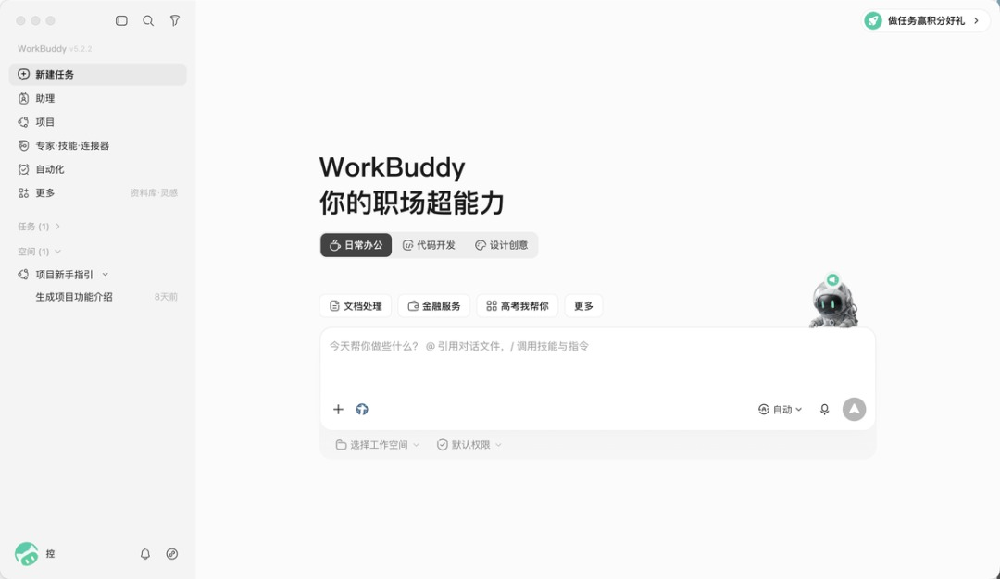
所给产品经理指南 · 产品首页
押注「交付 + 专家套件」：专家套件把 Skill、连接器、工作流封装成岗位方案，另有电脑操控、多个 IM 入口与专业工作台。
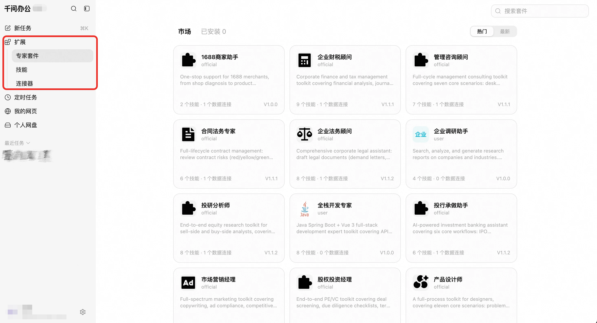
官方帮助中心 · 扩展中心
字节 · 调度TraeWork——任务在三端与云地环境间连续流动
押注「AI 原生工作台」：Work / Code / Design 按任务角色分流，移动端下发、网页与桌面执行，云端环境降低设备与本地配置依赖。
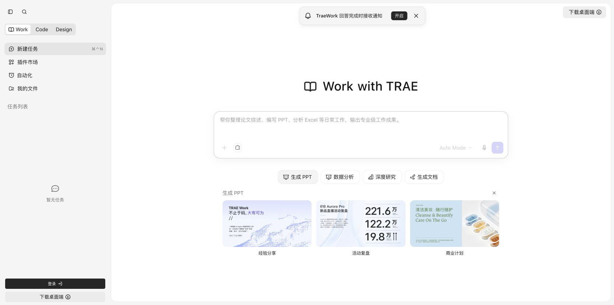
官方产品实页 · Work 模式
月之暗面 · 长程Kimi Work——让知识任务在桌面持续推进
押注「长程知识工作」：本地文件、WebBridge、目标模式、Agent 集群、专业数据库与看板共同把一次对话延长为持续任务。
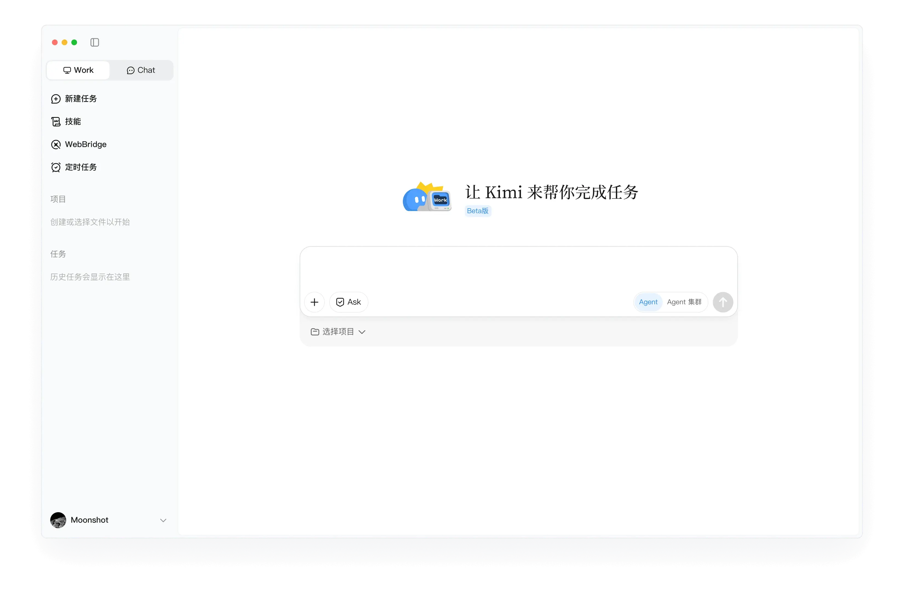
官方产品页 · 桌面 Work 模式
百度 · 资产库库 AI——知识资产成为项目执行底座
押注「知识资产驱动」：项目树、专家与技能、研报库、云盘、本地远程与自动化把资料供给和执行放进同一工作区。
共同转向
六家都不再只卖“更聪明的模型”，而在争夺任务的默认发生地：群聊、电脑、能力资源中心、跨端工作台、长期项目或知识资产库。市场分化的本质，是谁能获得更稳定的上下文与更高频的工作触点。
商业护城河来自宿主、资产、供给与运行时，而不是一次性功能数量
商业维度 · 获客入口 / 留存资产 / 扩张单位 / 护城河 / 结构性成本
01 坐标系02 豆包03 WorkBuddy04 千问05 TRAE06 洞察
维度 / 产品
豆包工作伙伴组织关系形成复利
WorkBuddy本地权限形成壁垒
千问办公能力供给驱动扩张
TraeWork运行环境保持连续
Kimi Work长程状态沉淀复利
百度库库 AI知识资产反复复用
ENTRY获客入口
飞书群与组织关系
桌面效率与本地任务
通用对话与岗位交付
TRAE 用户与跨角色任务
知识工作者的桌面项目
项目资料与知识检索
ASSET留存资产
群关系、任务与协作文档
本地目录、任务历史与技能
套件、连接器与工作台产物
任务、环境与跨端上下文
目标、项目、看板与自动化
项目树、研报、云盘与数据表
SCALE扩张单位
成员 / 部门 / 工作伙伴
设备 / Skill / 远程入口
专家套件 / 连接器 / 工作台
角色模式 / 云环境 / 终端
任务额度 / Agent / 数据源
项目 / 专家 / 技能 / 工具
MOAT护城河
组织身份与协作网络
本地登录态与电脑权限
能力供应链与生态分发
云地运行时与任务连续性
长程项目状态与持续视图
知识资产供给与项目复用
COST结构性成本
强依赖飞书生态
单机差异与事故半径
安装、授权与激活债务
模式选择与云地一致性
偏航、资源与恢复压力
分类与数据治理债务
商业判断：单次生成能力容易同质化，真正能形成复利的是用户迁移困难的现场与资产：组织关系、本地权限、能力生态、运行环境、长程项目状态或知识库。商业价值最终表现为更低的再次委托成本。
技术路线正在收敛为“上下文—规划—执行—治理—交付”，差异在默认组合
技术维度 · Context / Orchestration / Runtime / Governance / Artifact
01 坐标系02 豆包03 WorkBuddy04 千问05 TRAE06 洞察
维度 / 产品
豆包工作伙伴组织上下文默认最强
WorkBuddy本地运行时默认最强
千问办公能力编排默认最强
TraeWork云地连续性默认最强
Kimi Work长程编排默认最强
百度库库 AI数据资产默认最强
CONTEXT上下文
群聊、组织关系与飞书资产
本地目录、文件与应用状态
对话、连接器与企业数据
模式、任务与资源 Context
本地项目、浏览器与数据插件
项目树、研报库、云盘与本地资料
PLAN规划编排
任务、小队与 @交接
Ask / Plan / Craft 分级放权
专家套件封装岗位工作流
Work / Code / Design 路由
目标循环与 Agent 集群
专家、技能、工具与自动化
RUNTIME执行运行时
飞书动作、资源库与自动化
电脑操作、Skill 与本地工具链
电脑控制、连接器、Skill 与工作台
本地 / 云端智能体与多端同步
本地 Agent、WebBridge 与 Cron
桌面应用、远程本机与数据工作区
CONTROL治理控制
身份、权限、后台与群可见状态
目录边界、计划确认与远程控制
授权、确认策略与 Hooks
进度、预览与环境切换
权限、中断、diff 与回滚
项目绑定、设备在线与数据权限
OUTPUT交付产物
消息、任务、文档与表格回写
本地文件、PPT、代码与任务记录
PPT / Word / 网页 / 代码等可编辑产物
任务产物与跨端验收
文件、Widget 与 Dashboard
项目表格、文件、研报与结构化数据
技术判断：Agent 能力已从“调用一个模型”升级为多层系统工程。竞争优势不在单个组件，而在五层能否形成连续体验；码道 Work 的机会，是把研发硬信号、Agent Team 运行态与客观验收闭成一条可恢复链路。
同一个「修复一个线上缺陷」，六家会走出六条不同的现场
同题横测 · 七步任务链路 × 六家默认体验 × 码道 Work 目标态
01 格局02 豆包03 WB04 千问05 TRAE06 Kimi07 库库08 码道
STEP任务步骤
豆包工作伙伴
WorkBuddy
千问办公
TraeWork
Kimi Work
百度库库 AI
码道 Work目标态
01从哪触发
群内 @ / 事件订阅
桌面对话 / IM 远程
对话 / 钉钉频道
移动端下发任务
桌面项目内新任务
项目内发起
仓库 CI 与缺陷单硬信号
02谁接手
小队 @ 交接
单 Agent + Skill
专家套件
按模式路由单任务
Agent 集群子任务
专家 + 技能
Agent Team 带责任域
03上下文从哪来
群聊与飞书云文档
本地工作目录
连接器与企业数据
任务 Context 与云环境
本地文件与 WebBridge
项目树与研报库
仓库 / 需求 / 测试 / 历史缺陷
04改了什么
飞书文档与表格
本地文件与应用
可编辑成品（PPT / 代码）
任务产物
本地文件与看板
项目表格与数据
代码 + 测试 + 变更说明
05责任如何转移
@ 下一位，可读可追
同任务内无显式交接
套件内串联，非多 Agent
单任务闭合
集群并行，责任偏隐式
专家切换即换上下文
交接=交付声明+下一棒指令
06失败怎么办
群内追问后重派
计划确认，撤销靠本地
Hooks 确定性阻断
换环境重跑
diff 预览与回滚
重跑任务
定位失败点，从断点续跑
07怎么算完成
状态更新 + 产物落群
文件落地
成品可编辑
预览通过
文件 / 看板更新
结构化数据入库
测试通过 + 客观验收包
横测读法：前四步（触发 / 接手 / 上下文 / 改动）六家各有强项，差异只是宿主不同；真正拉开距离的是后三步——责任转移、失败恢复与完成判定。红格代表该步在默认体验中缺位或需人工兜底，不代表产品不可实现。
默认体验普遍在第五步之后变浅：交接、恢复与验收是集体断点
同题横测 · 链路完成度 · 只标默认体验能带到哪一步，不含定制开发
01 格局02 豆包03 WB04 千问05 TRAE06 Kimi07 库库08 码道
产品 / 链路步骤01 触发02 定界03 上下文04 执行05 交接06 恢复07 验收
默认体验覆盖
可做到，但需人工兜底或额外配置
默认体验缺位
虚线 = 六家共同的断崖位置
断崖结论：六家在「把任务跑起来」上已经充分竞争，在「跑完之后如何证明它对」上几乎没有分化。码道 Work 的机会不在前四步再快一点，而在把第五到第七步做成默认体验。
六条路线仍共同留下三个研发缺口：硬信号、责任链与客观验收
商业 × 市场 × 技术综合判断 · 六家各占一角、无一占满
01 坐标系02 豆包03 WorkBuddy04 千问05 TRAE06 洞察
六家占住的 · 各自体验高点
豆包：协作现场 + 组织形态
进群即被全员看见、@交接小队把多 Agent 降维成自然语言交接。
WorkBuddy：本地执行 + 远程遥控
三种放权模式本地动手干，微信 / 企微 / QQ / 飞书 / 钉钉远程下指令。
千问：对话即交付 + 专家套件
一句话交付 PPT / Word / 网页 / 代码，专家套件统一团队岗位方案。
TRAE：跨端调度 + 云地续接
移动端下发与监控，网页 / 桌面执行与验收，离线设备可切云端继续。
Kimi：长程目标 + 本地知识工作
目标模式持续循环，Agent 集群并行推进，本地文件、浏览器与看板共同承载长任务。
库库：项目资产 + 数据供给
项目树、研报库、云盘、专家技能与远程本机，把知识沉淀和任务执行放入同一桌面工作区。
六家仍空出的 · 研发体验缺口
客观硬信号尚未成为第一入口
构建失败、测试红、数据对不上不依赖 LLM 判断优先级；当前公开产品界面尚未把它们作为核心触发源。
执行 × 协作 × 交付尚未形成同一闭环
六家各自强化一个环节，但现有公开产品证据尚未展示三者在一次研发任务中的完整合流。
结构化研发上下文仍是机会
代码仓 / CI 日志 / 需求单 / 缺陷单比群聊与本地文件更适合形成可验证、可追溯的上下文链。
一句话趋势：豆包进群、WorkBuddy 进桌面、千问进套件、TraeWork 进跨端任务、Kimi Work 进长程项目、库库 AI 进知识资产——仍没有谁把“仓库硬信号 → Agent Team → 可验收交付”做成默认体验。这正是码道 Work 的定位窗口。
第二章 · CHAPTER TWO
Doubao Work Partner
02
豆包工作伙伴
组织身份让 AI 成为协作对象。字节把飞书 aily 更名豆包工作伙伴，用一个「同事」隐喻把 Agent 做成了有档案、有职责、有红线、有汇报关系的组织成员。逐层拆开机制，标出最强的一招与五条疤。
豆包的产品主轴不是能力扩张，而是把“同事”拆成四个可验证承诺
豆包 · 定位 · 主张拆解
01 坐标系02 豆包03 WorkBuddy04 千问05 TRAE06 洞察
主张动词
兑现模块
实测可见的形态
最难的地方
进入你工作环境
团队工作伙伴 · 群聊成员身份
Agent 以独立应用身份进群，头像旁挂「机器人」徽章与职能签名。
需要一个全员在线的宿主，这是最不可复制的一条。
就地协作
话题回复 · 产物写回云文档
@ 请求在主群只占一行，过程收进话题，文档卡片标「你可编辑」。
噪声隔离与信息留存必须同时成立。
主动干活
自动化 · 定时 / 事件 / Webhook
事件订阅宿主五类原生动作，细到「在文档评论中被所有者 @ 提及」。
主动 = 打扰，靠推送条件 + 收件箱分流兜底。
组织专家团队
工作小队 · 八种协作模板
队长接单 → 拆分 → 成员在同一条任务流里 @ 交接 → 汇总。
多 Agent 容易做成没人用的画布，它选了自然语言交接。
判断：四个动词都有对应模块，主张不是空话；三个可迁移，「进入你工作环境」强依赖宿主。
一个主入口降低启动成本，资产库承担复用与治理
豆包 · 信息架构 · 双壳 / 三线 / 九层
01 坐标系02 豆包03 WorkBuddy04 千问05 TRAE06 洞察
办公壳 · 创建 → 来料 → 资产
办公 · 首页
新任务（动词）→ 自动化 / 工作伙伴 / 项目 / 资源库 / 市场（名词）→ 任务列表。第 1 项永远是创建，末位永远是自己的资产。
九层框架 · 按「同事怎么被造出来」拆
L1 身份档案 = 职责 + 行为约束
L2 能力技能 · 知识 · MCP · 模型池
L3 组织小队 · 汇报 · 八模板
L4 工作任务六态 · DAG · 门禁
L5 触发定时 · 事件 · Webhook
L6 沉淀项目 · 资源库 · 产物
L7 供给市场 · Skill 门禁
L8 现场群聊 · 话题回复
L9 治理后台 · 额度 · 范围
九层不是重要性排序，是构造顺序：先有身份才谈能力，有编队才谈任务，最后才是现场与治理。三问选型漏斗：谁在用 / 干什么 / 要不要管控，三问共线。
人设文件定义角色，行为红线把信任变成可验证契约
豆包 · 身份 / 能力 · 档案 / 红线 / 模型池
01 坐标系02 豆包03 WorkBuddy04 千问05 TRAE06 洞察
人设 · IDENTITY.md
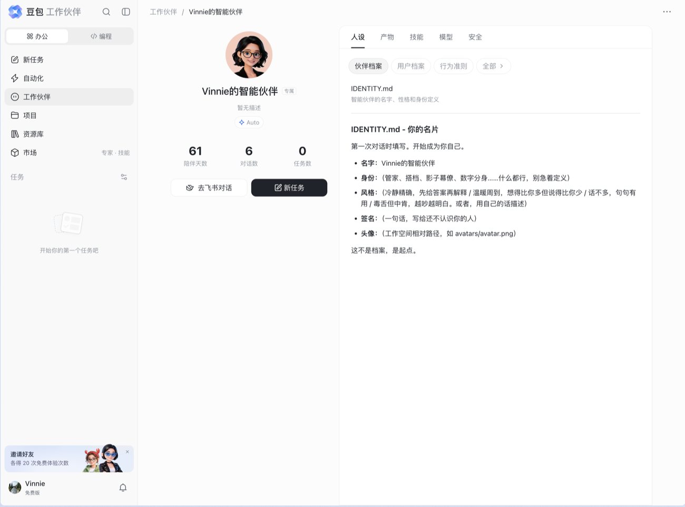
人设 · IDENTITY.md占位符即教学：三个风格锚点 + 一个逃逸口，解掉「空白输入框恐惧」。三个计数器（陪伴天数 / 对话数 / 任务数）制造沉没成本，但没有等级、没有徽章。
工作职责 + 行为约束
结构
实测原文（项目 PMO）
它在防什么
工作职责
流程管控 / 进度跟踪 / 资源协调 / 风险预警，每条「动词短语：做什么，产出什么」。
职责写不出「产出什么」的 Agent，没有交付责任。
行为约束
仅处理本职 / 不编造数据 / 信息不足明确说明 / 关键操作须确认。
越界 / 幻觉 / 硬答 / 越权——第三条把「我不知道」变成合规行为，最重要。
模型池三条决策：Auto 置顶默认；只给相对倍率（x0.25–x1.35）；标签三种互斥：模型上新 / 旗舰效果 / 高性价比。
为什么最高优先级：企业客户对 Agent 的第一疑虑是「会不会乱来」；行为约束能把边界显式化，但仍需权限、阻断、预览与恢复机制共同形成可审计治理。
任务模板的价值不是“给范例”，而是预先固化协作拓扑与中间状态
豆包 · 组织 / 工作 · 小队 / 八模板 / 状态机
01 坐标系02 豆包03 WorkBuddy04 千问05 TRAE06 洞察
八种协作模板
模式
机制
人数
路由
队长分类，派给最合适的一个成员
≥2
专家会诊
分别咨询多位专家再整合
≥3
圆桌讨论
多轮发言、互相可见、收敛
≥3
并行
切分并行分发，再汇总
≥3
投票
独立解同一题，投票择优
≥3
接力
A→B→C 单向流转
≥3
生产评审
A 产出、B 评审，不通过打回
2
红蓝对抗
对立立场互相挑战，第三方收口
3
任务状态机 · 两个中间态承担复杂度
状态
含义
它解决什么
待办 / 进行中
已创建未开始 / 处理中
—
待确认
需你选择确认后才能继续
人的依赖：把「等人」从失败里摘出来
已阻塞
存在上游未完成的任务
任务的依赖：把「等上游」从停滞里摘出来
已完成 / 已取消
可查看结果 / 不再执行
—
Task ≠ Execution：追加指令、重试、定时各产生新执行，记录永不覆盖。「单派默认不拆」——避免随口一句触发一场多 Agent 大戏。
末两行标绿：「生产评审」「红蓝对抗」在代码场景价值高于办公场景，因为代码有客观正确性——这是有研发场景的玩家能做得比豆包更好的地方。
豆包用团队可见性换掉私密单聊；@ 交接让多 Agent 的责任转移可被追踪
豆包 · 现场 · 群聊 / @交接（最强的一招）
01 坐标系02 豆包03 WorkBuddy04 千问05 TRAE06 洞察
群聊工作现场 · 一行占位 + 话题折叠
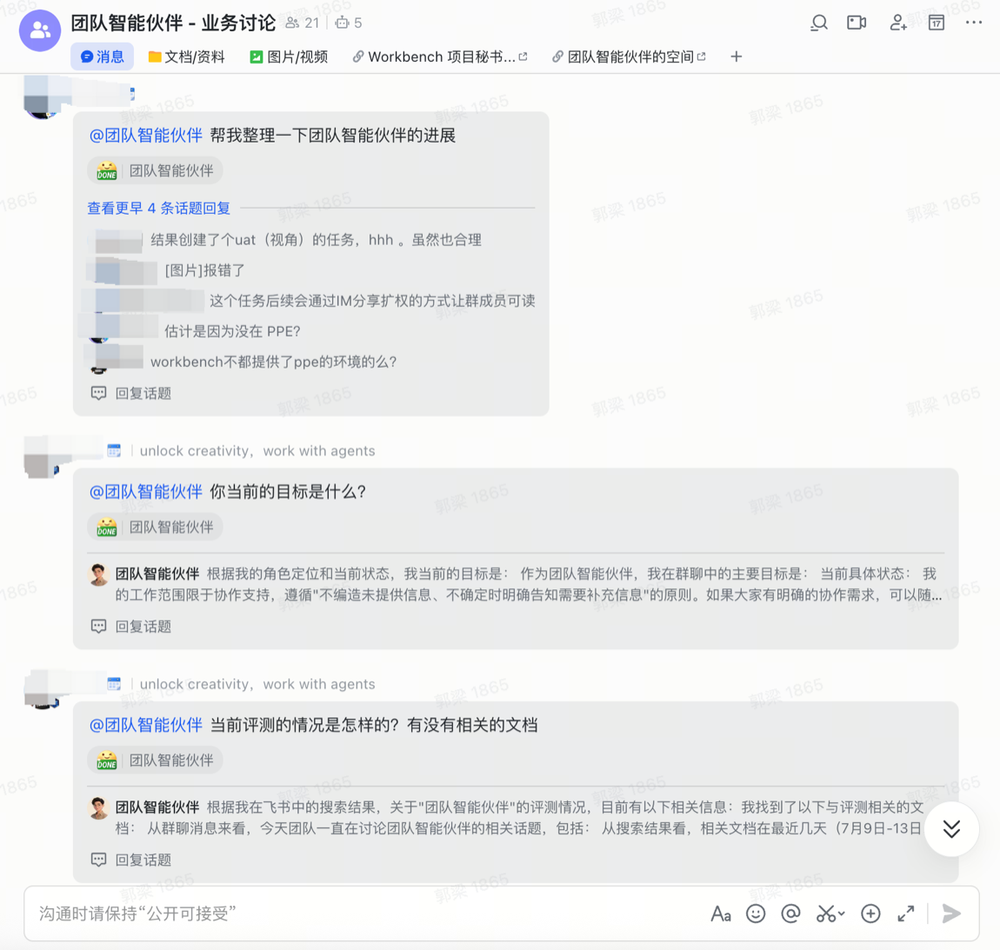
话题回复 · DONE 徽章主群流只留一条 @ 请求；reaction 位挂 DONE 徽章当状态指示器；过程收进话题。进群第一条消息四段式，第二段是灵魂——「我读到你们最近在做什么」。
@ 交接 · 三个设计优势
① 交接是可读的自然语言，不是一条边
用户看到「A 跟 B 说了句话」，不是「节点 A 连到节点 B」。人能读懂、能插话。交接语 = 交付声明 + 下一棒指令。
② 每个 Agent 接手时先自陈计划
「先拉取完整任务信息，确认我的分工和其他专家的交付进度」——把黑盒变成可预期行为。
③ 执行时长显式可见且可折叠
「正在执行 13 秒 ›」把等待量化，焦虑变成信息。上游还有「派单书」：序号 + 主题 → @专家 / 交付物 / 要求 / 验收。
为什么画布被放进开发者后台：画布适合结构固定、需要精确控制；@交接适合结构涌现、需要人随时介入——多 Agent 显然属于后者。
事件触发扩大主动性，评测门禁限制自动化的事故半径
豆包 · 触发 / 沉淀 / 供给 · 自动化 / 项目 / 市场 / 门禁
01 坐标系02 豆包03 WorkBuddy04 千问05 TRAE06 洞察
自动化触发 · 三种触发 + 闲时执行
消息 / 日程 / 会议 / 文档 / 邮箱五类原生动作，细到「在文档评论中被所有者 @ 提及」。闲时执行 00:00–06:00 错峰，但不推迟结果送达。
沉淀 + 供给 · 指令知识 / 做同款 / 评测门禁
项目 = 指令 + 知识
指令创建者独占写权限、Agent 只读；知识懒加载——「不会一上来读全部资料，需要时再查」。
市场「做同款」
专家（招募）· 技能（一键添加）· 最佳实践（做同款）· 企业智能体。用别人的成果反向变成需求，解掉「不知道能提什么」。
Skill 上架门禁
SKILL.md + assets，上架前跑安全 / 质量评测，报告按版本留存。P0 必过项针对环境变量收割与指令覆盖。
架构纪律：一个资产只有一个规范存储；所有面板是它的筛选视图；交互动作归属统一。门禁在前，繁荣在后。
品牌资产建立持续身份，治理后台把责任链拉回管理员视野
豆包 · 生成 / 治理 · 妙搭 / 管理后台
01 坐标系02 豆包03 WorkBuddy04 千问05 TRAE06 洞察
妙搭：生成层 · 命名风格库 + 竞品导入
风格卡片真实渲染、统一构图，并排时只有色彩字体在变。公开把 Replit / Lovable / Google AI Studio 做成导入入口——「你在哪做的原型不重要，上线要回到有业务数据的地方」。
L9 治理 · 决定生态能否成立
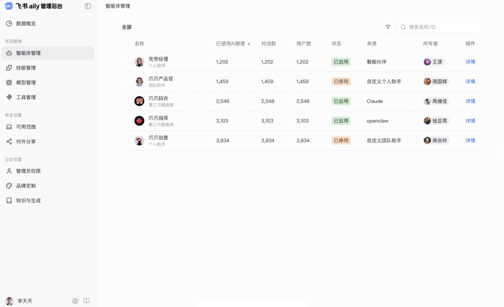
管理后台 · 智能体管理列表字段：额度 / 对话数 / 用户数 / 状态 / 来源 / 所有者。「来源」如实记录 Claude、openclaw 等第三方。Agent 详情页把「运行日志」「用户反馈」提到一级页签。
两条可复用：① 样式命名化 + 统一构图缩略图 + 生成前选定；② Agent 详情页生命周期视图，用户反馈必须一级。
五类体验缺口表明：拟人化提高亲近感，也同步抬高用户对可靠性的预期
豆包 · 软肋 · D01–D05
01 坐标系02 豆包03 WorkBuddy04 千问05 TRAE06 洞察
编号
观察到的问题
实测证据
正确做法
D01术语漂移
「工作伙伴 / 智能体 / 智能伙伴 / 专家」混用；品牌换名正在进行中。
侧栏「工作伙伴」↔「智能体」两版文案
PRD 阶段锁死术语表，做成可机检词表。
D02空态引导缺失
三处空态只说明「这是什么」，没给「现在该干什么」。
项目空态只有概念说明
一句是什么 + 一个动作 + 三个现成例子。
D03默认值即报错
开始 / 结束时间默认都填当前时间，打开就两条红色错误。
「时间必须晚于当前时间」×2
默认值必须是合法值；校验不早于首次交互。
D04隐喻当信息用
可拖拽组织架构画布，1–5 成员时信息量低于列表。
树状画布 + 防环校验，承载 5 张卡
先问是隐喻还是信息；隐喻别投拖拽工程量。
D05协作过紧
任务分享后「不能编辑 / 评论 / 改状态」——成了静态截图。
任务文档 · 分享权限
责任清晰值得保留，但至少开放「评论」。
清单用途：这五条是豆包的疤，也是一份通用自查项——术语、空态、默认值、隐喻、权限，任何一家 AI 办公产品都会踩。
豆包真正领先的不是“进群”，而是把群内请求变成可交接、可追踪的任务对象
豆包 · 闭环 / 成立条件 / 结构性代价
01 坐标系02 豆包03 WorkBuddy04 千问05 TRAE06 洞察
真实闭环 · 从现场信号到团队产物
TRIGGER群内 @ / 事件请求天然发生在团队可见的现场。
CONTEXT读取群与飞书资产群聊、文档、日历等构成共享上下文。
PLAN任务 / DAG / 模板把口头请求变为有状态的工作对象。
TEAM@ 下一位 Agent责任在同一任务流里显式转移。
OUTPUT写回云端产物文档、表格、代码与文件回到协作场。
CONTROL状态 / 日志 / 后台管理员看来源、权限与执行记录。
WHY IT WORKS共享可见性把“同步”成本提前消掉任务从发起起就在群内，成员无需等待 Agent 私聊完成后再转述；话题折叠又避免主群被长过程淹没。
MOAT组织身份比模型能力更难复制独立应用身份、群权限、云文档写回与成员关系都来自飞书宿主；对手能抄交互，难抄组织现场。
PROOF GAP状态可追踪，不等于结果已被客观验收材料能证明任务状态、确认节点与产物沉淀；对代码、数据等产物，自动测试和回归证据仍不是第一入口。
采用前提与失败模式
前提 01 · 团队工作已高度飞书化
如果关键上下文仍在本地盘、代码仓或其他 IM，进群不等于获得完整现场。
前提 02 · Agent 身份与权限先被治理
独立应用身份避免继承召唤者权限，但也带来授权、可用范围与跨群记忆边界的管理成本。
失败模式 · “同事感”掩盖能力边界
拟人化会提高用户预期；一旦上下文缺失、术语漂移或权限不足，信任跌落比普通工具更快。
迁移启示
可迁移的是“共享状态 + 显式交接 + 原位回写”；不可迁移的是飞书天然流量与组织关系。
深层判断：豆包的核心单位已经从“对话”变成“任务 + 产物 + 责任人”。它的强不是 Agent 数量，而是把责任转移做成了团队所有人都看得懂的运行态。
第三章 · CHAPTER THREE
Tencent WorkBuddy
03
腾讯 WorkBuddy
本地执行换来生产力，也继承环境不确定性。WorkBuddy 是桌面级 AI Agent——不只是聊天，而是真的动手：读取电脑上的文件、执行操作并交付成果。三种放权模式、工作目录与远程遥控，是它的三根柱子。
三种模式本质是三档放权：信息越明确，用户越少承担过程判断
WorkBuddy · 定位 · 三种放权模式
01 坐标系02 豆包03 WorkBuddy04 千问05 TRAE06 洞察
模式
放权程度
适合场景
问一问Ask
只看文件、回答问题，不改动任何东西。像问同事一个问题，他只口头回答。
先问清楚怎么做，再切换去执行
做一做Craft · 默认
最大权限，直接操作文件——整理文件夹、做 PPT、处理表格，一句话干完。
日常使用；先指定工作文件夹、做好备份
想一想Plan
先写详细执行计划——分几步、动哪些文件，你点头了才动手。像装修前先看图纸。
任务复杂、希望对过程有更多掌控
和豆包的不同：豆包用「行为约束」四类红线（Prompt 级、可自陈），WorkBuddy 用「三种模式」做放权分级（交互级）。同一问题——「AI 会不会乱来」——的两种解法。
工作目录把权限边界具象化，多任务并行仍不等于多 Agent 协作
WorkBuddy · 工作单位 · 隔离是本地执行的安全前提
01 坐标系02 豆包03 WorkBuddy04 千问05 TRAE06 洞察
产品证据 · 桌面任务首页
桌面工作台
产品经理指南主输入区把「模式、模型、技能、工作目录」集中在同一处；侧栏承载多条独立任务线。
机制图 · 从边界到并行
01
先框定工作目录用户指定文件夹；未指定时为任务创建隔离目录，把本地执行约束在可感知边界内。
02
再建立独立任务线一个对话对应一条工作线，文件、上下文与执行记录不互相污染。
03
最后并行推进多任务像多个窗口同时运行；所给长文展示的是任务级并行，并未展示任务内的 @交接链路。
判断边界：这里能确认的是「目录隔离 + 多任务并行」；是否具备更高阶的多 Agent 汇总能力，应以当前产品版本另行验证，不能仅凭这份长文下结论。
WorkBuddy 以 Skill 扩张执行边界，但生态规模同时放大选择与维护成本
WorkBuddy · 供给 · SkillHub / OpenClaw
01 坐标系02 豆包03 WorkBuddy04 千问05 TRAE06 洞察
产品证据 · 技能市场
产品经理指南市场页把「推荐 / SkillHub / 官方 / Xpack」做成可浏览供给，而不是把 Skill 藏在配置文件里。
供应链 · 发现 → 安装 → 复用
01
内置能力先兜底文档、表格、PPT、文件整理等高频技能开箱即用，先降低第一次成功成本。
02
社区供给再扩容SkillHub 与外部生态承担发现和安装，让长尾需求不必都由产品团队内置。
03
自然语言完成定制用户描述工作方法即可形成新 Skill；真正差异不在格式，而在门禁、分发和组织方式。
正确性边界：三家材料都展示了可安装、可复用的能力资源，但不能据此推断格式与生态完全兼容。更可靠的比较是：豆包强调评测门禁，千问强调套件封装，WorkBuddy 强调市场发现——差异在供给组织与治理方式。
IM 远程入口把电脑变成执行端，也把离线与误操作风险带到异地
WorkBuddy · 现场 · 远程遥控 / 多端
01 坐标系02 豆包03 WorkBuddy04 千问05 TRAE06 洞察
产品证据 · 远程入口最终落到桌面任务
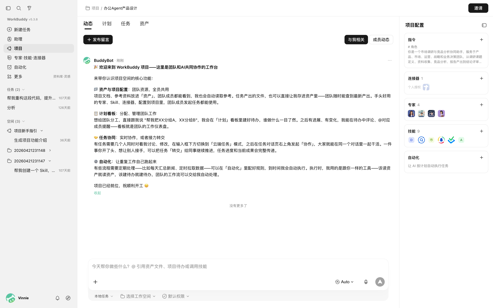
DESKTOP EXECUTION桌面实测桌面端能承接任务并调用本地文件、登录态与工具；IM 渠道范围来自产品指南，本页不展示小程序或 App 画面。
闭环 · 渠道只是入口，桌面才是执行场
微信企业微信QQ飞书钉钉
IN
从 IM 接收任务文字、语音、图片或文件都可成为远程指令，降低必须坐在电脑前的限制。
RUN
在本地环境执行真正被调用的是电脑里的文件、脚本与登录态；这也是本地 Agent 相比云端助手的硬差异。
OUT
结果回到原会话需要验证码或扫码时由人接管，完成后 Agent 继续，形成可中断、可恢复的人机闭环。
这是豆包结构上够不到的：豆包只能读飞书里的东西；WorkBuddy 通过 IM 远程驱动本地电脑，能碰本地文件、内网资源、本地脚本。本地执行是它的核心差异化。
专家封装行业方法，自动化压缩重复操作；两者都依赖可解释的触发与状态
WorkBuddy · 组织 / 触发 · 专家团 / 自动化
01 坐标系02 豆包03 WorkBuddy04 千问05 TRAE06 洞察
专家 / 专家团 · 把方法与角色做成可选资源
产品经理指南专家与专家团作为资源卡片被搜索、筛选并添加到任务；这里证明的是「可装配」，不等于任务内动态交接。
自动化 · 把一次对话变成周期执行
产品经理指南用户从空态直接新建自动化；运行依赖本地客户端状态，结果可与远程渠道衔接。
对比结论：豆包截图能直接看到任务流里的 @交接；所给 WorkBuddy 长文能确认专家/专家团装配与自动化，但未展示同一任务内的 Agent-to-Agent 交接。因此差异应写成「证据未出现」，而不是断言产品绝对没有。
相对倍率正成为模型选择的标准界面，但不能替代任务级成本预估
WorkBuddy · 模型 · Credits 倍率 / 推理 / 视觉
01 坐标系02 豆包03 WorkBuddy04 千问05 TRAE06 洞察
用户判断
界面给出的线索
仍未解决的问题
该选哪个模型？
模型名称、能力标签与场景推荐并列，减少用户自行查参数。
标签没有说明工具兼容、稳定性与完成概率。
这次大概多贵？
Credits 相对倍率让不同模型可横向比较，避免暴露复杂计费公式。
倍率不是任务总价；用户仍不知道一次复杂任务会消耗多少轮。
能不能看图 / 深度推理？
推理、视觉等能力标签把模型差异翻译成任务语言。
标签只说明“可能适合”，不证明当前上下文一定能完成。
默认选项是否可信？
推荐项把选择成本交给平台，适合大多数低风险任务。
平台应解释路由理由，并允许按任务目标覆盖默认。
何时需要换模型？
用户可在失败或任务升级时手动切换。
切换后上下文、工具状态与已付成本能否无损延续，仍应显式说明。
正确性边界：模型名单与倍率变化很快，本页不把版本相关数值写成稳定事实，只保留当前界面能支持的产品机制。行业机会是把“相对价格”进一步升级为任务级预算、预计完成率与失败后的续跑成本。
本地执行是最强的牌；任务内能否动态交接，公开证据仍不足
WorkBuddy · 软肋 · 边界与缺口
01 坐标系02 豆包03 WorkBuddy04 千问05 TRAE06 洞察
它占满的 · 本地执行
碰本地与内网资源
豆包读不到的文件、Excel、代码、脚本，WorkBuddy 直接操作。
远程遥控
微信 / 企微 / QQ / 飞书 / 钉钉远程下指令，本地执行。
放权分级
Ask / Craft / Plan 三种模式，把放权程度做成可选开关。
它空出的 · 组织级协作
长文展示的是「装配」
专家与专家团以卡片方式添加到任务，公开截图未展示角色间的运行态关系。
多任务 ≠ 动态协作
多窗口并行可以确认；结果是否统一回流、Agent 是否互相交接，需要当前版本实测。
@交接证据未出现
与豆包不同，当前公开产品界面没有展示「同一任务流里 @下一位 Agent」的具体交互。
一句话：WorkBuddy 的「本地执行」证据最硬；组织级协作的判断要按证据强弱表达。这份材料确认「执行」，保留「动态交接」为待验证项。
WorkBuddy 把“能做”推进到“能改本地状态”，但可靠性压力也从模型转移到电脑环境
WorkBuddy · 闭环 / 放权逻辑 / 运行风险
01 坐标系02 豆包03 WorkBuddy04 千问05 TRAE06 洞察
真实闭环 · 从自然语言到本地状态变更
INTENT本机或 IM 下指令人可以在电脑前，也可以从手机远程触发。
MODE问 / 做 / 想先决定只回答、直接执行或先计划审批。
BOUNDARY指定工作目录把读写范围装进用户可理解的“柜子”。
CAPABILITY模型 + Skill通用推理与专业流程在任务入口组合。
ACTION操作文件与应用产生真实文件、表格、PPT、代码等状态变化。
RETURN本地交付 / IM 回传结果在电脑落地，进度可从远端继续控制。
HARD VALUE把“回答”升级为“替用户完成操作”本地文件、内网资源与桌面软件往往没有标准 API；能触碰这些资源，就是它相对纯 SaaS Agent 的硬差异。
CONTROL MODEL三种模式解决的是放权，不是结果正确性Ask / Craft / Plan 能控制“何时动手”，却不能证明“动手后做对了”；复杂任务仍需要备份、差异检查与验收。
EVIDENCE BOUNDARY多任务并行不能直接推出多 Agent 协作现有材料能确认独立任务线、专家团装配和自动化；任务内责任交接、统一汇总与部分失败恢复仍缺直接证据。
采用成本与高风险点
环境成本 · 每台电脑都是不同生产现场
文件路径、软件版本、登录态、内网与权限各不相同，桌面成功率天然比云端 API 更难标准化。
安全成本 · 远程入口放大本地权限
IM 指令最终落到本机文件与应用，身份绑定、敏感操作确认、审计与撤销必须形成一条链。
恢复成本 · 本地改动可能不可逆
工作目录只是范围边界，不是回滚机制；备份、版本控制、变更预览应成为“做一做”的系统能力。
迁移启示
先把“执行边界 + 变更预览 + 可恢复性”做牢，再扩大自动化与远程入口；否则入口越多，事故半径越大。
深层判断：WorkBuddy 的护城河是本地可达性，不是 Skill 数量。它真正需要补的不是更多专家，而是把“环境差异、执行证据、失败恢复”产品化。
第四章 · CHAPTER FOUR
Alibaba QwenWork
04
阿里千问办公
可安装的专业能力把对话推进到成品。千问办公以「一个 AI 入口，对话即交付」为核心承诺，覆盖电脑操控、专家套件、多个 IM 入口与专业工作台。广度是优势，也让授权、激活与维护成为新的体验成本。
千问的核心承诺不是生成内容，而是把对话直接推进到可编辑成品
千问 · 定位 · 多端 / 钉生态
01 坐标系02 豆包03 WorkBuddy04 千问05 TRAE06 洞察
成品作为终点，而非回复作为终点
对话直接推进到可编辑成品
核心差异不是生成更多文字，而是把文档、表格、PPT、代码等产物留在可继续工作的界面。
多入口只有共享状态才有价值
入口覆盖不等于任务连续
网页、桌面与 IM 需要回到同一任务、文件和回复脉络，否则入口越多，搬运与重新解释越多。
模型通过资源体系被产品化
专业性来自模型之外的装配
记忆、Skill 与连接器补足专业上下文；模型参数不是体验判断核心，资源能否被发现、授权和正确调用才是。
核心能力支撑：官方帮助中心可确认扩展、连接器、电脑操控、记忆、Hooks、专家套件与工作区等资源；本稿把它们视为“交付链”的支撑机制，不据此推断所有场景都已完全闭环。
电脑操控扩张可达性，也把审批、阻断与回滚提升为核心体验
千问 · 电脑操控 · Computer Use
01 坐标系02 豆包03 WorkBuddy04 千问05 TRAE06 洞察
核心能力 · 四项
屏幕感知
读取目标窗口内容，理解布局、按钮、表单状态，持续截屏确认上一步结果。
鼠标键盘控制
点击、双击、拖拽、输入、快捷键，像素级精度。
后台自主执行
不抢占前台焦点，你继续用电脑，AI 在背后干活。
跨应用流程
多应用切换，多步操作串联，按实时反馈动态调整。
执行策略 · 三种
策略
说明
每次询问（默认）
AI 每次操控桌面都会先征求你的确认。
自动执行
直接执行，无需逐次确认。
禁用
完全关闭电脑操控。
与 Skill 联动：重复的界面操作流程可保存为 Skill，以后一句话触发整个流程。注意：屏幕内容会被截取，含密码的窗口应先关闭。
与 WorkBuddy 对位：两者本质相同——让 Agent 直接操作本地图形界面与文件。千问的「电脑操控」更细（屏幕感知 + 结果确认 + 配合 Skill 固化），通过「连接器 → 计算机控制」开启。
专家套件把隐性岗位知识变成可复用方案，但不等于多 Agent 协作
千问 · 专家套件 · Skill → 套件递进
01 坐标系02 豆包03 WorkBuddy04 千问05 TRAE06 洞察
专家套件 · 一次安装一组岗位能力
EXPERT KIT
官方帮助中心专家套件面向岗位或场景，把多项能力作为完整方案供用户安装；价值在「整组获得」，不是单点调用。
技能 · 可独立安装的专业工作流
官方帮助中心Skill 是预定义专业工作流；用户可在对话中手动选择，也可让系统在合适时调用已安装资源。
官方可确认：扩展中心分为专家套件、技能、连接器三类；安装后可从「我的安装」或聊天框「添加资源」调用。企业空间支持组织内上传与共享，但这些证据说明的是能力封装与分发，并不等于多 Agent 协作。
Hooks 把高风险控制从模型建议升级为确定性执行
千问 · Hooks · 确定性治理
01 坐标系02 豆包03 WorkBuddy04 千问05 TRAE06 洞察
事件 · 11 种
事件
触发场景
PreToolUse
工具执行前，可阻止（如拦截 rm -rf）
PostToolUse
工具成功后（如写文件后自动 lint）
Stop
Agent 完成响应时，可阻止停止让其继续
PermissionRequest
工具需用户授权时
Notification
权限请求 / 任务完成（桌面通知）
SessionStart / End
会话开始 / 结束
机制 · JSON 配置 + 脚本
无需改代码
编辑 ~/.qwenwork/settings.json，挂 shell 脚本即可。
确定性
与 Prompt 不同，只要事件触发脚本就一定执行，不受模型理解偏差影响。
典型用法
拦截 rm -rf、写文件后 lint、任务完成弹通知、git 有未提交则让 Agent 继续。
三条红线机制：豆包用「行为约束」（Prompt 级、可自陈），WorkBuddy 用「三种放权模式」（交互级），千问用「Hooks」（脚本级、确定性）——分别解「商业信任」与「工程确定性」两个问题。
多入口的价值不在数量，而在任务状态能否原路返回并跨会话延续
千问 · IM 频道 / 意识 · 记忆与个性化
01 坐标系02 豆包03 WorkBuddy04 千问05 TRAE06 洞察
IM 频道 · 7 个平台 + 任务绑定
7 个平台
钉钉 / 飞书 / Lark / 微信 / 企业微信 / Slack / WhatsApp，统一在 IM 频道页管理。
准入策略
开放模式（所有人可对话）/ 配对模式（需你允许）。桌面端仍是管控中心。
任务绑定 /bind
手机上 /bind 编号接管电脑正在跑的任务——汇报进度、补充指令、提供验证码。
意识 · 记忆与个性化系统
五个记忆文件
SOUL.md（协作风格）、AGENTS.md（工作手册/行为准则）、USER.md（用户画像）、MEMORY.md（长期记忆）、memory/（短期记忆）。
自动记忆 + 反思
持续记录偏好与习惯，定期触发记忆反思——新对话带着完整上下文开始。
进化动态面板
记忆趋势图、今日统计（审查 / 新增记忆 / 技能更新 / 反思）。
和豆包对齐：千问的「意识（SOUL/AGENTS/USER/MEMORY）」与豆包的「IDENTITY.md + 用户工作画像 + 持久化记忆」是同一套「双向档案」思路，只是落成不同的文件体系。
连接器与专业工作台把回答链延伸为交付链，也增加授权与归因成本
千问 · 连接器 / 工作台 · 浏览器 / macOS / M365 / 钉钉
01 坐标系02 豆包03 WorkBuddy04 千问05 TRAE06 洞察
连接器 · 把外部账号、数据和工具接进对话
官方帮助中心连接器安装后通常仍需参数配置或账号授权；「已安装」不等于「每轮自动启用」。
三大工作台 · 与豆包「妙搭」对位
设计工作台
「设计即代码」画布，161 个风格参考，Questions → Design Plan → Nudge 三机制。
幻灯片工作台
35 个模板的 HTML 幻灯片，先确认大纲再生成，导出 PPTX / PDF / HTML。
写作工作台
Markdown 长文，版本管理，多轮迭代保留可回溯版本。
横跨最全的证据：官方扩展页明确把连接器定义为外部平台、账号、数据与工具的桥；右侧三大工作台则把输出从「答案」推进到可编辑成品。广度成立，具体连接深度仍应逐项验证。
专家套件解决「统一方案」，并不能直接证明「多 Agent 小队协作」
千问 · 软肋 · 边界与缺口
01 坐标系02 豆包03 WorkBuddy04 千问05 TRAE06 洞察
它占满的 · 交付最全
对话即交付
一句话交付 PPT / Word / Excel / 网页 / 代码 / 视频。
专家套件 + 电脑操控
本地执行 + 岗位方案，两头都占。
Hooks 确定性治理
脚本级拦截，不依赖模型理解。
它空出的 · 组织级协作
专家套件非小队
一个 Agent 装载一套方案，不是多个 Agent 分工。
@交接证据未出现
官方扩展文档展示安装、调用与团队分发，未展示多个 Agent 在同一任务流中的交接。
横跨面广、深度有限
每处都占、每处都欠一层，多端协同的复杂度也是成本。
一句话：千问是「什么都能交付」的全能同事，但没有「一支队伍」——交付和协作，它只有前一半。
千问的优势是把能力做成可安装资源；它的新瓶颈也因此变成“选对、配好、持续维护”
千问 · 资源供应链 / 激活成本 / 版本治理
01 坐标系02 豆包03 WorkBuddy04 千问05 TRAE06 洞察
真实闭环 · 从需求到跨系统成品
INTENT网页 / 桌面 / IM入口覆盖广，桌面端仍是统一管控中心。
ASSEMBLE模型 + Skill + 套件把通用模型、专业流程与岗位标准组合。
AUTHORIZE连接器配置授权外部账号、参数与组织权限决定可达范围。
ACTION浏览器 / GUI / SaaS跨应用执行并在每步后确认屏幕结果。
CONTROL审批策略 + Hooks交互确认与确定性脚本共同限制风险。
DELIVER工作台可编辑成品设计、幻灯片、写作等输出继续迭代。
SUPPLY ADVANTAGE套件把“岗位能力”做成了可分发产品专家套件不仅包含提示词，还可组合多个 Skill 与连接器；企业空间进一步承担组织内统一供给。
ACTIVATION DEBT安装成功 ≠ 本轮自动启用 ≠ 已经可用官方文档明确：资源可能需手动选择；连接器和套件内连接器还需参数、账号授权与组织权限。
VERSION CONFLICT标准化更新与个人定制存在覆盖冲突套件更新会以创作者版本为准并覆盖个人修改；这暴露了企业模板、个人分叉与升级策略之间的治理难题。
采用成本与边界
选择成本 · 能力越多，路由越难
用户要理解 Skill、套件、连接器、工作台的关系；自动路由不透明时，失败很难判断是模型、资源还是授权问题。
授权成本 · 登录不等于数据可读
例如钉钉账号登录后仍需通过连接器授权，说明身份、数据访问与工具执行是三套不同权限。
供给边界 · 个人与企业发布能力不对称
当前文档说明个人暂不能把自建 Skill 发布到公共扩展；企业用户则按组织权限在企业空间内共享。
迁移启示
扩展中心必须同时展示依赖、授权、适用输入、版本与实际调用记录；否则“资源丰富”会转化为排障负担。
深层判断：千问不是简单“横跨最全”，而是率先遇到能力平台化之后的供应链问题：资源发现、激活、授权、路由、更新与组织分发必须一起被产品化。
第五章 · CHAPTER FIVE
ByteDance TraeWork
05
字节 TraeWork
跨端连续性承接跨角色任务。TraeWork 承接 TRAE IDE SOLO 的能力，却不再把用户限定为开发者：Work / Code / Design 三模式、网页与桌面端，以及云端智能体共同把它重构成跨角色、跨设备、跨环境的 AI 原生工作台。
TraeWork 的战略不是“办公版 IDE”，而是把不同角色的任务统一成可调度对象
TRAE · 战略层 / 范围层 · 三模式 × 三端
01 坐标系02 豆包03 WorkBuddy04 千问05 TRAE06 洞察
产品证据 · Work 模式首页
OFFICIAL PRODUCT
官方产品实页顶部直接展示 Work / Code / Design；侧栏集中新建任务、插件市场、自动化、我的文件与任务列表。
五要素判断 · 它改变了谁的什么行为
战略目标 · 从“使用工具”变为“调度任务”
移动端负责任务下发与管理，网页 / 桌面负责任务执行、深度交互和产物验收；用户角色被推向委托者与验收者。
范围选择 · 按角色切 Work / Code / Design
不是按模型或工具分流，而是按办公、开发、设计三类工作心智分流，降低每个模式内部的功能噪音。
核心承诺 · 任务与产物跨三端连续
三端共享账号与任务数据；移动端可监控多台电脑，设备离线时官方称可切换云端执行。
体验高点
用户不必把“在哪台设备、哪个环境继续”当成自己的协调工作，系统把任务连续性前置承担。
对比：WorkBuddy 的远程入口最终仍指向一台本地电脑；TraeWork 把“移动调度—本地 / 云端执行—三端同步—产物验收”写成了更明确的跨设备角色分工。
三种模式切换角色语境，Context 与运行环境决定任务能否真正执行
TRAE · 结构层 · Mode / Context / Runtime / Artifact
01 坐标系02 豆包03 WorkBuddy04 千问05 TRAE06 洞察
官方目录能确认的任务结构
MODEWork / Code / Design先选任务语境，收敛默认能力与交付形态。
INPUT文字 / 语音 / 附件 / Skill用多元输入补足任务来料。
CONTEXTSkills / Rules / Memory定义方法、约束与跨任务连续性。
TOOLSMCP / Commands连接外部工具与可执行动作。
PLANSpec & Plan官方目录提供内置规划工作流。
RUNTIMELocal / Cloud Agent在本地或隔离云端环境运行。
STRUCTURE VALUE把复杂性分成“模式、上下文、环境”三类用户无需一次理解所有模型和工具；先决定任务类型，再按需补方法与运行条件。
CHOICE COST三模式仍把首次路由判断交给用户跨产品、设计与代码的任务可能同时需要三个模式；如果切换不保留状态，模式会从减负变成割裂。
EVIDENCE BOUNDARY资源齐全不等于多 Agent 协作成立官方页可确认任务、资源与环境；多个 Agent 的责任拆分、交接、汇总和部分失败恢复仍需单独验证。
和另外三家的结构差异
对豆包 · 少了天然组织关系
任务状态跨端连续，但团队成员、群上下文与责任交接不天然随之存在。
对 WorkBuddy · 多了云端环境抽象
官方明确云端运行时、依赖管理与隔离，减少本地环境差异对执行稳定性的影响。
对千问 · 少了岗位套件叙事
TraeWork 以模式和 Context 资源组织能力；千问以专家套件组织岗位标准，用户心智不同。
对码道 Work
不必再发明一个 Work / Code 切换；更有价值的是让同一研发任务在需求、设计、代码、测试间无损流转。
能力结构：Skills 作为可发现、可安装的任务资源
深层判断：TraeWork 的结构优势是“任务连续性”，不是“模式数量”。评价关键是：跨模式、跨设备、跨环境后，用户是否仍能回到同一任务对象与同一验收标准。
模式、任务与产物同屏，是先建立委托边界而非展示功能大全
TRAE · 框架层 / 表现层 · 可见证据与行为推断分离
01 坐标系02 豆包03 WorkBuddy04 千问05 TRAE06 洞察
VISIBLE UI
画面可见白底、黑灰控制、极少装饰色；表现层把重心让给任务输入、模式与产物案例。
01
顶部模式切换 · 明确当前工作语境通过 Work / Code / Design 先缩小能力范围，解决“同一个入口什么都能做、但不知道该怎么开始”的问题。
02
侧栏任务与资产 · 保护跨会话连续性新建任务、自动化、我的文件、任务列表共同把对话结果沉淀为可返回的工作对象，而非一次性聊天。
03
中央大输入 + 快捷任务 · 降低首个委托成本“生成 PPT / 数据分析 / 深度研究 / 生成文档”把抽象能力翻译成具体交付物，帮助用户建立可预期结果。
04
进度展示 + 产物预览验收 · 降低盯盘与切换官方文档声称桌面端实时展示进度、自动总结输出，并可在对话内预览和验收；完整交互仍需实测确认。
体验收益：TraeWork 试图让用户从“先学会工具，再完成任务”转成“先说明交付物，系统再选择模式、资源与环境”；风险是模式选择和能力路由仍有一部分判断成本没有被系统接管。
TraeWork 最强的是任务连续性；最需要验证的是多人责任与复杂任务恢复
TRAE · 体验闭环 / 成立条件 / 结构性代价
01 坐标系02 豆包03 WorkBuddy04 千问05 TRAE06 洞察
理想旅程 · 官方能力可以拼出的体验闭环
ASSIGN手机或电脑下发用文字、语音或附件描述交付物。
ROUTE选择任务模式Work / Code / Design 确定工作语境。
GROUND补充 ContextSkills、Rules、Memory 与 MCP 提供方法。
RUN本地或云端执行根据设备与环境条件持续运行。
WATCH三端看状态进度与任务数据在三端同步。
ACCEPT预览并验收产物在对话内查看、确认或继续修改。
EXPERIENCE HIGH任务不再绑定设备与单一运行环境用户可以离开电脑继续管理任务，设备离线时由云端承接，减少中断后重新建任务的成本。
TEAM GAP跨端同步不等于多人协作个人在多设备间连续，与多人共享状态、责任归属、审批和交接是两套问题；当前概述页主要证明前者。
RECOVERY GAP“可见进度”还需升级为“可恢复状态”复杂任务真正需要的是失败原因、影响范围、保留已有结果、局部重试与回到验收基线，而不仅是过程透明。
产品体验五要素结论
战略层 · 跨角色任务调度
从开发者工具扩展为覆盖办公、开发、设计的工作台。
范围层 · 三模式 + 三端 + 云地环境
范围广但边界清晰，官方当前页未证明组织级协作深度。
结构 / 框架 · 任务对象化与产物验收
模式、任务、资源、环境和产物形成一条个人任务连续链。
表现层 · 极简、工具化、弱拟人
黑白界面降低品牌噪音，但对非技术用户的情感引导弱于“同事”叙事。
待验证边界：资源供给可见，多人责任与局部恢复仍未被画面证明
一句话：TraeWork 把用户从“单机操作者”推向“跨端任务调度者”；码道 Work 不应跟它拼模式和终端数量，而应补齐研发任务里更难的责任、证据与恢复。
第六章 · CHAPTER SIX
Moonshot AI · Kimi Work
06
Kimi Work
长程目标把桌面 Agent 从执行器变成持续推进者。Kimi Work 面向知识工作者，把 Agent 内核迁移到桌面交互：本地文件、WebBridge、定时任务、目标模式、Agent 集群、小组件与看板共同承载长程任务。
Kimi Work 的关键不是“本地版 Kimi”，而是把知识工作改造成可长期运行的桌面项目
Kimi Work · 战略层 / 范围层 · 本地 Agent × 长程任务
01 框架02 豆包03 WB04 千问05 TRAE06 Kimi07 库库08 洞察
产品证据 · Work 与 Chat 分离，任务成为一级对象
OFFICIAL PRODUCT
Kimi 官方产品页侧栏把新建任务、技能、WebBridge、定时任务、项目与历史任务放进 Work 模式；输入区直接选择 Agent / Agent 集群。
产品体验五要素 · 它改变了用户的哪种工作方式
战略层 · 从“问一次”变为“把目标交给项目助理”
用户不必打开终端或配置环境，只需描述目标；系统在本地拆解任务、并行执行、调用工具并交付文档、表格与 PPT。
范围层 · 本地文件 + 浏览器 + 专业数据 + 自动化
Skill、插件、WebBridge、定时任务、小组件与看板覆盖信息搬运、文件整理、数据分析和报告生产。
结构层 · 目标、项目、集群与持续视图
目标模式维持稳定终点，项目文件夹保存任务脉络，Agent 集群扩大并行，小组件与看板让结果持续更新。
体验高点 · 把“任务做完”延长成“工作持续运转”
真正差异不是本地读写本身，而是任务能跨数小时推进、按计划重复运行，并沉淀为不依附单次对话的视图。
官方可确认：Kimi Work 当前为 Beta；官方帮助中心确认本地 Agent、目标模式、插件、WebBridge、定时任务、Agent 集群、小组件、看板与权限控制。本稿不把厂商案例中的页数、时长与集群规模直接等同于稳定体验质量。
目标模式与 Agent 集群把时长和并行做大，真正瓶颈转向偏航、成本与责任可见
Kimi Work · 目标循环 / Agent 集群 / 人在 Loop 中
01 框架02 豆包03 WB04 千问05 TRAE06 Kimi07 库库08 洞察
理想闭环 · 从明确终点到可编辑交付
GOAL定义清晰终点先说明什么算成功，而非列出固定步骤。
GROUND挂载本地项目文件、文件夹与 @上下文构成真实现场。
LOOP持续比较差距围绕稳定目标循环推进，可随时中断修正。
SWARM创建 Agent 集群按复杂度并行拆解研究、分析与产出。
TOOLS浏览器 / 插件 / Skill连接网页、专业数据与可执行工具。
DELIVER文件 / PPT / Widget交付可编辑文件或可持续更新的界面。
STRUCTURE VALUE目标不漂移，过程可以多次试错目标模式先提取成功标准，再持续比较现状与目标差距；它适合目标清楚、路径不确定、结果能验证的长任务。
CONTROL COST“人在 Loop 中”仍需要高质量状态摘要官方强调过程透明、可中断与补充指令；但当过程持续数小时，用户真正需要的是偏差、成本和风险摘要，而不是完整日志。
TEAM GAP集群规模不能替代责任与失败恢复官方能证明并行 Agent 模式与复杂任务拆解；子任务责任、上下文交接、部分失败保留与统一验收仍需从运行界面继续验证。
适用条件与结构性代价
适用 · 目标清楚、路径未知、结果可验证
资料整理、数据分析、研究复现与知识库建设比开放式“帮我想想”更适合持续循环。
偏航 · 循环越长，错误假设放大越久
需要阶段性目标、差距说明、异常停机与回到检查点，而不只是“继续工作”。
成本 · 并行度和时长必须可预期
集群数量与长程调用会迅速放大资源消耗；界面应把预算、剩余时间与收益估计放进委托前判断。
对码道 Work
可借鉴“稳定目标 + 人在 Loop 中”，但研发任务还要用构建、测试与回归把成功标准从文字升级为硬证据。
并行：Work 模式输入区可切换 Agent / Agent 集群，任务在本地工作区起跑
连续：项目、任务历史与 Work 模式共同保存长程脉络
体验判断：Kimi Work 的新增变量不是“更多 Agent”，而是把持续时长和并行规模同时推高。产品竞争因此从“能否执行”升级为“能否让用户用很少判断成本管理一个长时间运行的团队”。
小组件与看板把一次性答案变成持续更新的工作界面，恢复与治理也必须同步升级
Kimi Work · Widget / Dashboard / Cron / WebBridge / Recovery
01 框架02 豆包03 WB04 千问05 TRAE06 Kimi07 库库08 洞察
自动化与浏览器 · 本地任务不再局限于文件夹
WebBridge：把网页浏览、提取与多步骤操作纳入任务链
Kimi 官方产品页以上均为桌面端 / 浏览器画面，不使用 App 或小程序截图。
从产物到持续工作界面 · 四个体验判断
01
Widget · 答案变成可交互页面模型可在会话中即时生成小组件，并连接本地数据或外部插件持续更新；交付物从静态文件扩展为可操作界面。
02
Dashboard · 结果脱离单次会话长期存在看板围绕主题、项目或目标汇总小组件，支持排布、批注、任务开关与运行记录，降低再次寻找结果的成本。
03
Permission · 两档授权仍需按风险细分“请求权限 / 全部允许”解决是否执行；系统级文件、浏览器与代码操作还需要变更预览、敏感动作升级确认和最小权限。
04
Recovery · diff 与一键回滚开始进入核心界面3.1.8 发布日志确认文件修改后提供 diff 摘要、逐行查看与一键回滚；这是长程 Agent 从过程透明走向可恢复的关键一步。
深层判断：Kimi Work 把“回答—产物—持续界面—自动更新”连成一条新链路；但看板删除不可恢复、任务数量与套餐相关、长程自动化依赖电脑状态，也说明持续运行越强，版本、权限、成本与恢复越必须被产品化。
第七章 · CHAPTER SEVEN
Baidu Kuku AI · GenFlow
07
百度库库 AI
知识资产让桌面 Agent 从一次执行走向项目复利。库库 AI（百度文库网盘 GenFlow，AI 办公 MAU 超 2500 万）没把起点放在空白对话，而是把项目、资料、研报、云盘、专家与技能组织成长期工作区。它试图证明：Agent 的持续价值不仅来自多做任务，更来自每次任务都能复用已有知识资产。
库库 AI 的关键不是专家数量，而是把项目资料、数据供给与任务执行放进同一工作区
库库 AI · 战略层 / 范围层 · 知识资产驱动的项目执行
01 框架02 豆包03 WB04 千问05 TRAE06 Kimi07 库库08 洞察
首页证据 · 项目、知识与执行入口并列出现
DESKTOP PRODUCT
桌面端产品截图首页同时露出项目、自动化、远程连接、专家 / 技能、云盘与研报入口，说明核心对象不是一次会话，而是持续复用的工作资产。
体验五要素 · 用户为什么愿意把项目交出去
战略层 · 从“找资料”升级为“围绕项目持续产出”
用户先选择项目与知识范围，再发起分析、整理或生成；产品价值来自减少每次重建背景的成本。
范围层 · 项目 + 专家 / 技能 / 工具 + 数据供给
项目树、研报库、云盘、本地资料、远程本机与自动化共同构成可调用范围。
商业抓手 · 知识资产越完整，再次委托越便宜
项目资料与数据源能被后续任务复用，留存不只来自聊天历史，也来自用户已经组织好的资产关系。
体验高点 · 数据供给与任务执行不再分属两个产品
用户可在同一桌面应用里找到资料、选专家、发起任务并查看结构化结果，减少跨系统搬运。
战略判断：库库 AI 占住的是“知识资产项目助手”，不是另一款通用聊天工具。它与 Kimi Work 都面向知识工作，但前者更强调资料与数据的项目化沉淀，后者更强调目标持续运行。
项目树让资料成为可复用上下文，但专家、技能、工具三套入口也制造激活债务
库库 AI · 结构层 / 框架层 · Context binding × Capability routing
01 框架02 豆包03 WB04 千问05 TRAE06 Kimi07 库库08 洞察
结构证据 · 项目树 + 数据工作区
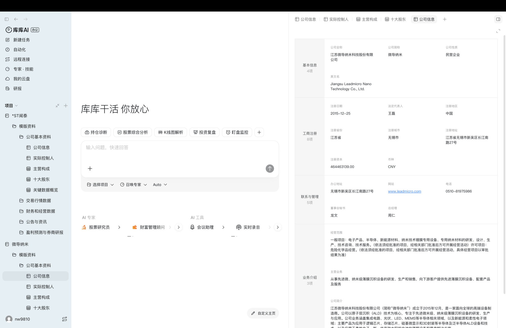
PROJECT WORKSPACE框架层：左侧项目与资料树固定上下文，中央任务区承载委托，右侧结构化表格让资料不只被“读”，还可被继续组织。
能力证据 · 专家与技能市场
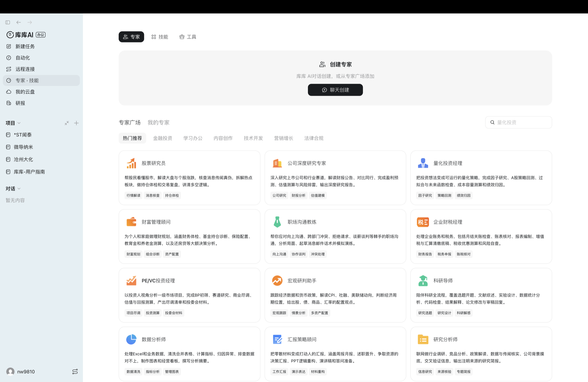
EXPERTS & SKILLS范围层：专家承担角色承诺，技能与工具承担执行能力；当三类入口并列时，系统必须解释如何自动路由与为何选择。
CONTEXT VALUE项目先于对话，减少背景重建资料、表格与任务依附同一项目对象，用户重新进入时更容易从既有资产继续。
ACTIVATION DEBT供给越多，选择与归因成本越高专家、技能、工具若没有统一入口与自动路由，用户会把时间花在选能力和排查依赖上。
TEAM GAP专家供给不等于责任协作界面能证明角色与能力可发现，但多角色之间的拆分、交接、部分失败与统一验收仍需进一步验证。
结构判断：库库 AI 的优势是把“资料属于哪个项目”提前决定；下一步竞争点不是再增加入口，而是让用户只表达目标，系统自动完成项目绑定、能力路由与依赖说明。
研报库、云盘与远程本机扩大知识半径，也把来源、权限与恢复推到体验前台
库库 AI · 数据供给 / 运行时 / 治理 · Cloud × Local
01 框架02 豆包03 WB04 千问05 TRAE06 Kimi07 库库08 洞察
知识供给 · 研报成为可检索、可入项目的数据源
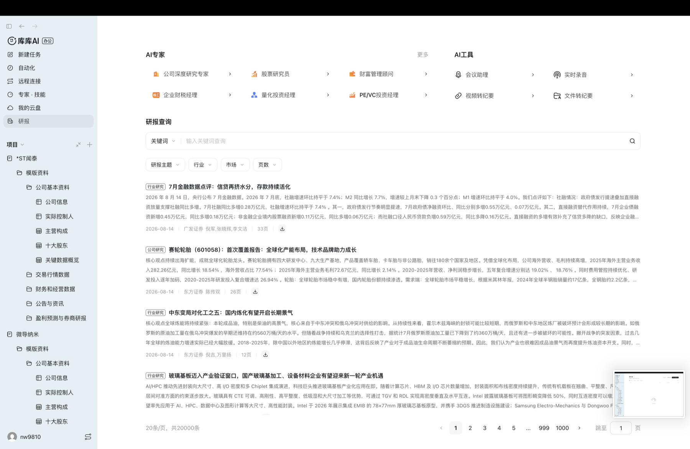
REPORT DATABASE体验收益：专业资料从临时搜索结果变成可重复引用的数据资产；关键是让来源、时间与引用关系随产物一起保留。
执行半径 · 云端资料与远程本机被放进同一入口
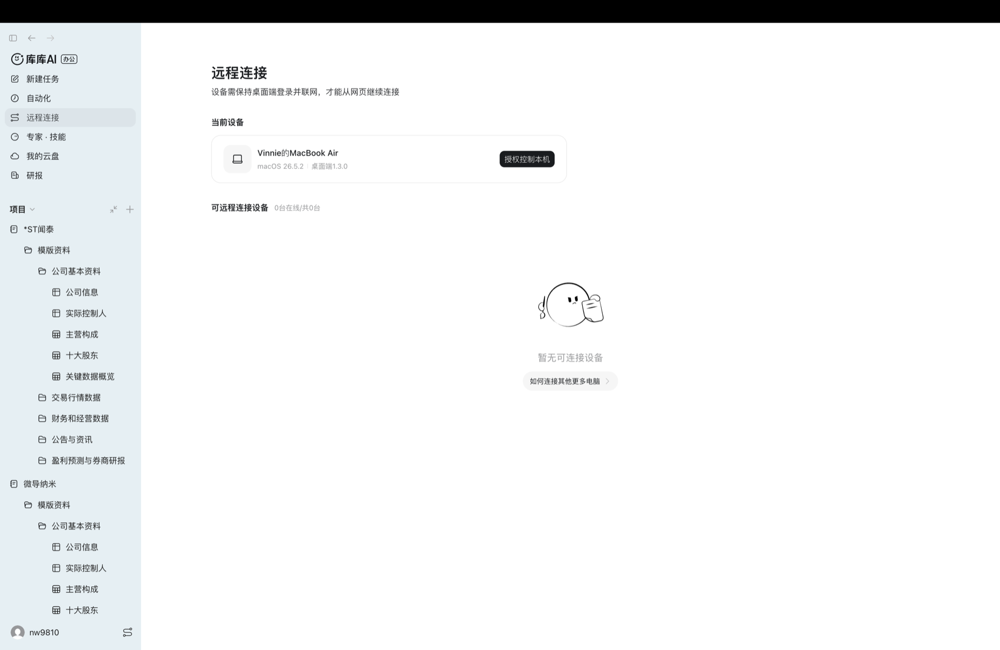
REMOTE DESKTOP可见边界：远程控制依赖桌面设备在线；连接范围越大，设备授权、操作预览、敏感动作确认与失败恢复越重要。
01
来源透明 · 先回答资料从哪里来研报、云盘与本地文件需要保留来源、时间与权限标签，避免“有答案但不可追溯”。
02
项目绑定 · 再回答哪些资料参与任务用户应能在委托前确认项目范围与已挂载资产，减少隐性上下文带来的误用。
03
设备治理 · 最后回答 Agent 能改什么远程本机将知识检索扩展为真实操作，控制必须从连接成功升级为权限、预览和恢复。
体验判断：库库 AI 把云端数据供给与本地执行半径组合起来，形成更强的项目现场；但资产越多、设备越深，用户越需要在委托前看懂来源与权限，在执行中看懂变更，在失败后能回到检查点。
第八章 · CHAPTER EIGHT
Cross-Analysis & Positioning
08
六家各占一种体验主轴（现场互有重叠）
码道 Work 应占住
研发任务的可验收协作
六款产品深拆完，回到体验五要素：谁降低了哪一种判断成本，谁又留下了哪种结构性缺口。最终不做功能拼盘，而是为码道 Work 找到研发复杂任务中的独特位置。
六家都在回答“AI 会不会乱来”，但控制发生在不同层，交付也落在不同地方
横向 · 控制权 / 交付去向 / 验收体验
01 框架02 豆包03 WB04 千问05 TRAE06 Kimi07 库库08 洞察
六种控制路径 · 从解释边界到变更可恢复
产品
用户看到的控制方式
体验层级
豆包 · 行为约束
越界 / 幻觉 / 硬答 / 越权四类红线，Agent 可当面自陈
解释边界 · Prompt 级
WorkBuddy · 放权模式
问一问 / 做一做 / 想一想，对应只答 / 直接干 / 先方案
决定何时动手 · 交互级
千问 · Hooks
PreToolUse 等事件可用脚本阻断危险命令或强制继续
确定性阻断 · 脚本级
TRAE · Rules / 进度 / 验收
官方目录提供 Rules 与 Spec & Plan，桌面端展示进度并在对话内预览验收
过程可见 · 规则级
Kimi · 权限 / diff / 回滚
操作前授权；文件修改生成 diff 摘要，可逐行查看并一键回滚
变更可恢复 · 文件级
库库 · 项目 / 设备边界
先绑定项目上下文；远程连接要求桌面设备在线并显式授权
上下文与设备授权 · 运行时
交付去向 · 决定用户怎样继续工作与验收
产品
默认交付去向
体验结果
豆包
飞书话题、文档、表格与资源库
团队原位继续协作
WorkBuddy
本地目录、文件与桌面应用
离用户数据最近，但需预览与回滚
千问
设计 / 幻灯片 / 写作工作台及外部系统
从答案推进到可编辑成品
TRAE
任务会话内预览，网页 / 桌面继续验收
跨端不丢任务与产物
Kimi
本地项目、办公文件、小组件与持续看板
结果可继续编辑、自动更新与长期查看
库库
项目表格、文件、研报与结构化数据
结果回到知识资产现场继续复用
“交付到哪里”比“能生成什么”更决定体验闭环；错误去向会产生搬运、解释、授权和重新验收成本。
码道 Work 机会：把六类控制组合为一条责任链：解释上下文、选择放权级别、规则阻断、过程可见、设备与数据授权、变更可恢复，最终仍由构建、测试与回归证据决定是否完成。
六产品不是“功能多少”的竞赛，而是用不同体验结构降低不同决策成本
横向 · 产品体验五要素矩阵 · 只比较默认产品结构，不做未经验证的能力打分
01 框架02 豆包03 WB04 千问05 TRAE06 Kimi07 库库08 洞察
维度 / 产品
豆包工作伙伴降低团队同步成本
WorkBuddy降低手工操作成本
千问办公降低能力组装成本
TraeWork降低环境切换成本
Kimi Work降低长程管理成本
百度库库 AI降低背景重建成本
STRATEGY战略层
团队 AI 同事 · 共享现场委托
本地执行助手 · 少做重复操作
成品交付平台 · 快速获得专业能力
跨角色工作台 · 跨设备与环境续接
长程项目助理 · 持续推进知识工作
知识资产助手 · 复用项目资料与数据
SCOPE范围层
群、任务、文档、表格、资源库
本地文件、桌面应用、IM、Skill
扩展、连接器、电脑控制、工作区
三模式、网页 / 桌面与云地环境
本地文件、WebBridge、Goal、Widget
项目、专家、技能、研报、云盘、远程
STRUCTURE结构层
请求 → 任务 → @交接 → 群内回写
模式 → 目录 → Skill → 动作 → 文件
意图 → 授权 → 动作 → 工作台成品
模式 → 上下文 → 环境 → 同步 → 验收
目标 → 项目 → 循环 / 集群 → 文件
项目 → 资料 → 专家 / 技能 → 成果
SKELETON框架层
群话题、Task 与成员可见状态
模式 / Skill / 目录集中入口
扩展中心、对话、工作台、管理中心
模式页签、任务侧栏与产物预览
Work / Chat、项目、任务与看板
项目树 + 任务区 + 数据工作区
SURFACE表现层
拟人、社交化，强化同事关系
桌面生产力语义，直接工具感
同事形象，强调广度与能力供给
黑白极简、低拟人、工程气质
黑白蓝、项目化、低拟人桌面语义
黑白橙、数据化、项目资产语义
矩阵结论：没有一个绝对赢家，只有不同的体验主轴。码道 Work 不必复制任何一条，而应专门降低研发复杂任务里的上下文重建、责任追踪、异常恢复与结果验收成本。
四条战略判断：竞争焦点已从“谁会回答”转向“谁能在真实系统里承担责任”
洞察 · 从表层共性推导产品结构
01 框架02 豆包03 WB04 千问05 TRAE06 Kimi07 库库08 洞察
01
“同事”其实是身份、执行与交付三种承诺，当前仍未合一
豆包优先建立组织身份，WorkBuddy 优先替用户动手，千问优先把答案推进成成品。下一阶段的空位不是再造一种人格，而是让同一 Agent 同时被组织信任、能操作真实系统、也能原位交付。
02
多 Agent 不是一种形态；分工设计权决定用户承担多少治理成本
当前可观察到人工编队、专家并行、方案封装、模式路由、自动集群与资产绑定六种组织方式。无论谁设计分工，真正协作都要让拆分、责任、交接、汇总与部分失败恢复可见。
03
能力平台化会制造新的“激活债务”
Skill、连接器、套件，以及库库 AI 的专家 / 技能 / 工具分类越丰富，用户越需要理解安装、授权、调用与失败归因。供给增长若快于自动路由和依赖透明度，生态会从卖点变成排障成本。
04
治理必须由“预防—介入—恢复—验收”叠加
Prompt 与审批解释和控制边界，Hooks 确定性阻断，diff / 回滚支持恢复，测试与回归证明结果。Kimi 的文件 diff 与一键回滚补上恢复层，但研发交付仍要靠硬信号验收。
用户角色变化：当执行被 Agent 接管，用户从“亲手操作的人”转成“委托、监控与验收的人”。产品价值因此不再只是少点几步，而是让用户少读全部过程、只在异常时介入、无需重建上下文就能判断结果。
没有统一冠军；最优选型取决于工作宿主、执行半径与风险边界是否匹配
选型地图 · 先匹配主要摩擦，再比较功能与模型
01 格局02 豆包03 WB04 千问05 TRAE06 Kimi07 库库08 码道
豆包工作伙伴
优势来自组织身份、群内任务与协作资产，适合让 AI 进入团队共享现场。
优先选择：协作关系与群内交接是主要摩擦
腾讯 WorkBuddy
优势来自本地文件、桌面应用与直观放权模式，适合把重复操作真正交出去。
优先选择：本地执行与远程控制是主要摩擦
阿里千问办公
优势来自专家套件、连接器与可编辑交付，适合把岗位方法做成组织能力供给。
优先选择：能力组装与企业分发是主要摩擦
字节 TraeWork
优势来自多模式、工作空间与云地运行环境，适合让任务跨角色与环境连续推进。
优先选择：工作 / 代码 / 设计切换是主要摩擦
Kimi Work
优势来自本地 Agent、目标循环与持续界面，适合长时间运行的知识工作。
优先选择：长程推进与本地资料是主要摩擦
百度库库 AI
优势来自项目树、研报、云盘与数据工作区，适合围绕知识资产反复完成任务。
优先选择：项目知识复用与数据供给是主要摩擦
选型原则：不要先问“谁的模型最强”，先问团队最昂贵的判断发生在哪里。宿主不匹配时，功能越多，迁移、授权、搬运和重新验收成本反而越高。
码道 Work 不该做“又一个通用办公 Agent”，而应成为研发复杂任务的可验收协作工作台
定位锥 · 目标人群 / 根本矛盾 / 独特机制 / 可感知价值
01 框架02 豆包03 WB04 千问05 TRAE06 Kimi07 库库08 洞察
WHO企业研发团队产品 / 设计 / 开发 / 测试共同推进复杂任务。
TENSION想委托，却不敢放手上下文分散、分支不可见、正确性难判断。
OBJECT一个持续任务对象承载信号、上下文、责任、产物与验收。
RUNTIMEAgent Team 运行态拆分、并行、等待、交接和部分失败可见。
PROOF证据驱动验收构建、测试、差异与回归决定是否完成。
VALUE放心委托少盯过程、异常才介入、无需重做判断。
NOT · GENERAL不是通用聊天 / PPT Agent不与六家争夺所有办公入口，把范围收紧到跨需求、设计、代码与测试的研发任务。
NOT · MARKETPLACE不是另一套模式与 Skill 商店能力供给不是主叙事；入口应统一，路由理由、依赖与失败原因必须可解释。
NOT · IDE CHAT也不只是把 IDE 做成聊天框代码生成只是执行环节；产品对象必须跨角色、跨阶段并保留交接和验收证据。
一句话定位
MD
面向研发复杂任务的可验收 Agent 协作工作台
以仓库硬信号触发，以持续任务对象承载，以Agent Team并行推进，以客观证据与回归完成验收。
用户要完成的判断
码道 Work 应提供的体验证据
能不能委托？
显式展示已读取的仓库、需求、权限、时间与缺失项。
现在谁在负责？
主 Agent、子任务、等待关系与交接对象在一张状态卡里持续更新。
何时需要介入？
只在越权、歧义、测试失败或高风险变更时请求用户判断。
做错后怎么恢复？
保留检查点，支持局部重试、回滚与基于已返回结果继续。
凭什么算完成？
构建、测试、差异、审批与回归证据共同形成验收包。
POSITIONING WEDGE研发现场 × 责任可见 × 结果可证六家分别占住组织、本地、能力、跨端、长程与知识资产；码道 Work 用“可验收”占住研发协作的最后一公里。
定位成立的前提：统一任务入口，系统自动路由到 HTML 交付、产品体验、代码、测试等责任单元；路由可解释、上下文无损交接，用户不需要先理解 Agent 组织结构。
这个定位不是信念，而是三根可以被推翻的柱子
反向论证 · 定位成立当且仅当三条同时为真 · 任一条被证伪即需重估
01 格局02 豆包03 WB04 千问05 TRAE06 Kimi07 库库08 码道
PILLAR 01 · 空位是真的
研发原生工具也没有把「可验收协作」做成默认体验
成立时Codex / Cursor / Claude Code 强在代码生成与仓库上下文，但责任多绑定单开发者会话；Devin / 通义灵码走向自主执行，验收仍以「代码能跑」为主。
被推翻时其中任一家把跨角色交接 + 客观验收包做成默认体验——那么空位是伪的，码道 Work 应转为在其之上做垂直增强。
当前依据：公开产品形态显示交接与部分失败恢复非默认体验；按本稿口径，这属于「材料未展示」而非「产品没有」，需持续复检。
PILLAR 02 · 痛点是真的
用户真正卡住的是「敢不敢合入」，不只是「更快写代码」
成立时评审、回归、责任归属是研发交付的实际瓶颈；生成速度提升后，瓶颈会向验收环节转移而不是消失。
被推翻时用户只为生成速度付费，验收体验不影响留存与选择——那么可验收协作是过度工程，应回到效率叙事。
验证方式：把「验收包」做成可开关能力，比较开启组与关闭组的合入率、返工率与再次委托率，而不是靠满意度问卷。
PILLAR 03 · 不自相残杀
码道 Work 与码道 IDE 服务的是两种不同的工作单位
成立时IDE 的单位是「一个人在编辑器里的一次会话」；Work 的单位是「一个跨角色任务从触发到验收」。两者互为上下游而非替代。
被推翻时两者用户池与主场景高度重合，Work 的任务大多可在 IDE 会话内完成——那么是在摊薄同一批用户。
边界规则：凡能在单人会话内完成且无需跨责任交接的，归 IDE；凡需要多责任单元协作 + 客观验收的，归 Work。
为什么要有这一页：前文所有论证都在证真。给出「什么会推翻我们」，才让这个定位从主张变成可检验的判断——也是跳过中间章节的决策者唯一需要读的一页。
六个发力点不是凭空提出，而是从六家现场逐条反推出来的
溯源 · 码道发力点 ← 来自谁 ← 学到的具体机制 ← 仍未被解决的部分
01 格局02 豆包03 WB04 千问05 TRAE06 Kimi07 库库08 码道
码道 Work 发力点
来自谁
学到的机制
它仍没解决的
01 · ENTRY统一任务入口
TraeWork · 千问办公
任务对象先于工具选择：按任务角色分流，多入口进入同一任务并原路返回。
入口仍以「人来发起」为默认，没有一家以仓库硬信号自动开单。
02 · CONTEXT先展示我已读到什么
豆包工作伙伴
进群首条消息第二段：「我读到你们最近在做什么」——先复述现场理解，再谈能力。
复述的是聊天上下文，不含代码库、测试与历史缺陷这类结构化研发现场。
03 · TEAMAgent Team 运行态
Kimi Work · 豆包工作伙伴
Agent 集群并行可见；「正在执行 13 秒 ›」把等待量化，过程可折叠不淹没主线。
并行状态可见，但子任务失败后的责任归属与重试路径仍偏隐式。
04 · HANDOFF跨责任单元无损交接
豆包工作伙伴
@交接 = 交付声明 + 下一棒指令，是一句可读的自然语言而不是一条图上的边，人能读懂也能插话。
交接内容是文字承诺，没有随交接传递的可执行验收标准与中间产物包。
05 · CONTROL渐进放权 + 可恢复
WorkBuddy · Kimi Work · 千问办公
三档放权（Ask / Plan / Craft）+ diff 预览与回滚 + Hooks 把高风险控制从模型建议升级为确定性阻断。
放权与回滚面向单机文件，缺少面向分支、流水线与发布的研发级恢复语义。
06 · PROOF客观信号决定是否完成
六家均无——这是空位
没有可借鉴的机制。六家的「完成」统一等于产物已生成或状态已更新。
这一格的空白就是码道 Work 的差异化来源：把构建、测试、差异与审批做成完成条件。
溯源结论：前五个发力点是可迁移的既有机制，工程风险低、验证快；第六个（PROOF）没有任何一家提供参照，既是最大的机会，也是唯一需要码道自己定义标准的部分——因此它必须是 P0。
码道 Work 的六个产品体验发力点：从“能执行”推进到“敢委托、易介入、可验收”
体验策略 · 问题 → 系统机制 → 用户收益
01 框架02 豆包03 WB04 千问05 TRAE06 Kimi07 库库08 洞察
01 · ENTRY统一任务入口，不让用户先选专家
从需求、缺陷、代码变更或自然语言进入同一任务对象；系统自动路由并解释“为什么交给谁”。
收益：先表达目标，不先学习产品组织。
02 · CONTEXT先展示“我已读到什么”，再展示“我会什么”
把来源、时间、权限与缺失项显式呈现；用户先验证现场理解，才能放心放权。
收益：降低首次信任与排错成本。
03 · TEAM把 Agent Team 做成运行态，不做角色开关
展示拆分、并行、等待、交接、汇总和失败重试；主 Agent 停止时也要看得见子任务状态。
收益：团队协作从隐喻变成可治理事实。
04 · HANDOFF跨责任单元无损交接
HTML 交付、产品体验、代码与测试共享同一上下文包、验收标准和中间产物，交接理由可追溯。
收益：不重复解释，不在交接中丢意图。
05 · CONTROL渐进放权 + 变更预览 + 可恢复
从只读到计划审批再到自动执行；高风险操作叠加脚本阻断、快照与回滚。
收益：自动化半径扩大，事故半径不扩大。
06 · PROOF让客观信号决定“是否完成”
构建、测试、差异、审批和业务指标进入任务闭环；Agent 的完成自述只是一条证据。
收益：从生成产物升级为可验收交付。
优先级：P0 先打通“统一任务对象 + 客观验收”；P1 再把 Agent Team 运行态与无损交接做透；P2 扩展能力供给。先证明一次研发任务能闭环，再扩入口与生态。
证据强度声明：分清「产品没有」与「材料未展示」
口径 · 三档证据 × 反向论证
08 码道01 格局02 豆包03 WB04 千问05 TRAE06 Kimi07 库库
三档证据强度
强 · 官方文档 / 桌面实测截图豆包（61 截图 + 8 文档）、库库（11 截图）；结论可直接引用机制。
中 · 官方产品页 / 帮助中心TraeWork、Kimi、千问；只能证明「能力存在」，不能证明「运行效果」。
弱 · 报道 / 二手转述定价、MAU 等；仅作参考，不作为机制结论。
反向论证：如果码道 Work 定位错了，错在哪
风险一研发协作已被 Codex / Cursor 占住，「可验收协作」是伪需求。
风险二用户要的是「更快写代码」，不是「责任可见 + 可验收」。
风险三码道 Work 与码道 IDE 自相竞争，摊薄同一用户池。
口径修正：「豆包 @交接是唯一动态协作」等结论，一律加限定词——是「材料可见」的唯一，不是「市场存在」的唯一。
把「可验收」操作化，并给商业章节补硬数据锚点
定义 · 验收包 × 六产品关键数据
08 码道01 格局02 豆包03 WB04 千问05 TRAE06 Kimi07 库库
「完成」≠「验收」：验收包定义
验收包 = 构建通过 + 测试通过 + diff 符合预期 + 审批 + 回归证据Agent 的「完成自述」只是一条证据，不是结论。
示例缺陷单 → Agent Team 拆解并行 → 代码 / 测试产物 → 验收包（构建✓ 测试✓ diff✓ 审批✓ 回归✓）。
六产品关键数据锚点（公开口径）
库库 AI百度文库网盘 GenFlow，AI 办公 MAU 超 2500 万。
千问 / WorkBuddy / 豆包千问 198 元/人/月；WorkBuddy 99/199/999；豆包企业版 99 元月均（专业版 68/200/500）。
Kimi / TraeWorkKimi 会员订阅；TraeWork 免费版 + 企业席位 / Token。
提示：以上为公开口径，随产品迭代更新；仅用于锚定商业章节信用，不作为精确评测。
POSITION
放心委托
过程可见
失败可恢复
结果可验收
六款产品分别降低团队同步、手工操作、能力组装、环境切换、长程推进与知识重建成本；码道 Work 应专门降低研发任务的判断、恢复与验收成本。
定位：研发复杂任务的可验收协作工作台
不做更宽的通用办公 Agent，把需求—设计—代码—测试之间的责任与证据串成一个任务。
差异化：硬信号 × 结构化上下文 × Agent Team
从仓库、CI、缺陷与变更触发；责任、进度、等待、交接和部分失败都对用户可见。
护城河：证据与恢复闭环
让测试、构建、差异与回归决定是否完成；允许从失败分支续跑，而不是让用户重开会话、重建判断。
OPPORTUNITY MAP · 分析结论，非现有产品截图
SIGNAL仓库硬信号CI 失败 · 测试红 · 变更集 · 缺陷单
→
TEAMAgent Team任务拆分 · 并行推进 · 上下文交接
→
PROOF可验收交付代码 · 测试 · 证据 · 回归结果
OBJECTIVE SIGNALSSTRUCTURED CONTEXTVERIFIABLE LOOP
THANKS
答案不是更像同事，而是更值得托付
从六种体验路径，推导码道 Work 的定位与发力点。
研发现场 · 责任可见 · 结果可证
6 PRODUCTS · 5 ELEMENTS
研发现场 · 责任可见 · 结果可证